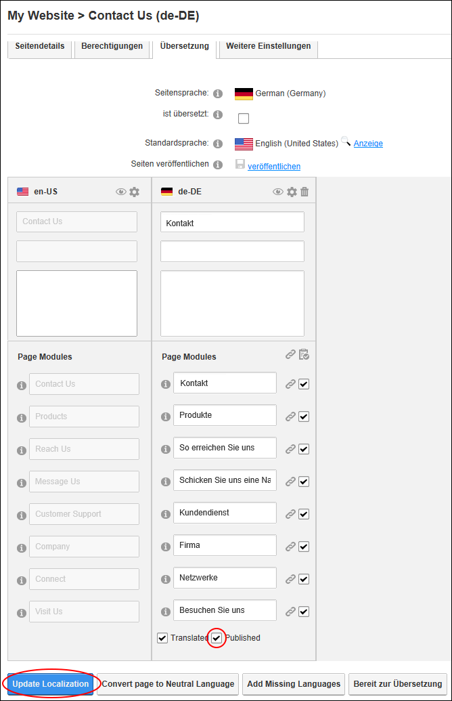
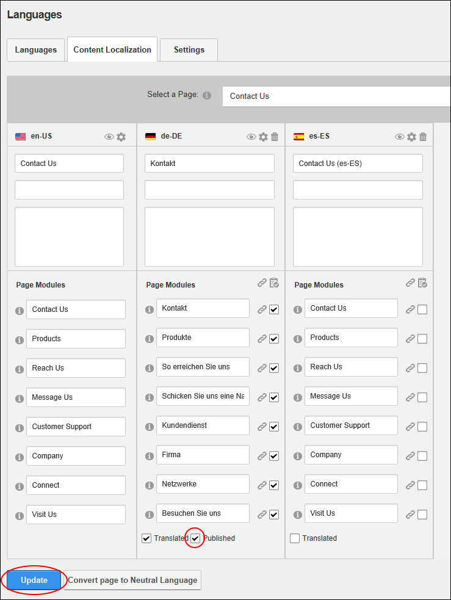

Publishing a Single Page Translation
How to publish individual translations of a single page. This updates the view permissions for the selected page so they are the same as the default language version of the page.
The page must be translated. See "Setting a Page as Translated"
Using the ControlBar
- View the page in the language you are publishing.
- Navigate to the required page.
- Select Page Localization from the Edit Page section of the ControlBar.
- At Published ,
- Click the Update Localization button.

Using the Languages Module
- Navigate to Admin > Advanced Settings >
 Languages - OR - Go to a Languages module.
Languages - OR - Go to a Languages module.
- Select the Content Localization tab.
- At Select a Page, find or select the required page.
- At Published , to translate the page.

-